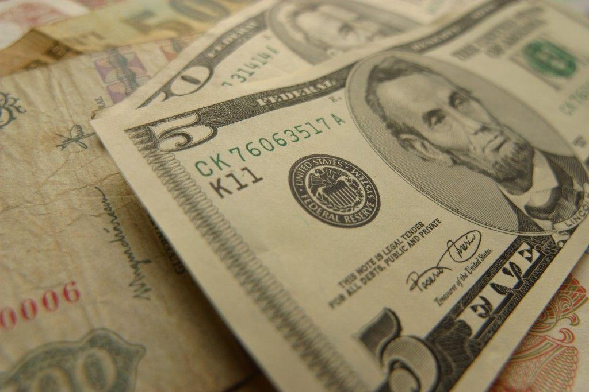
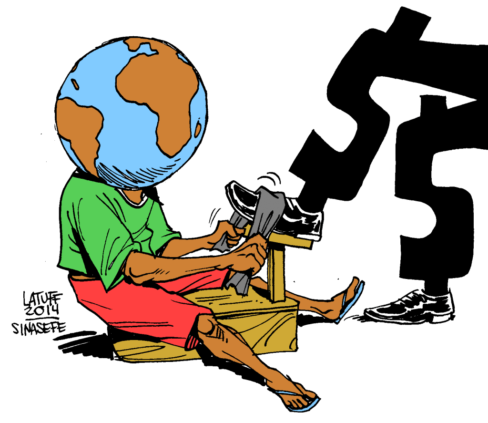
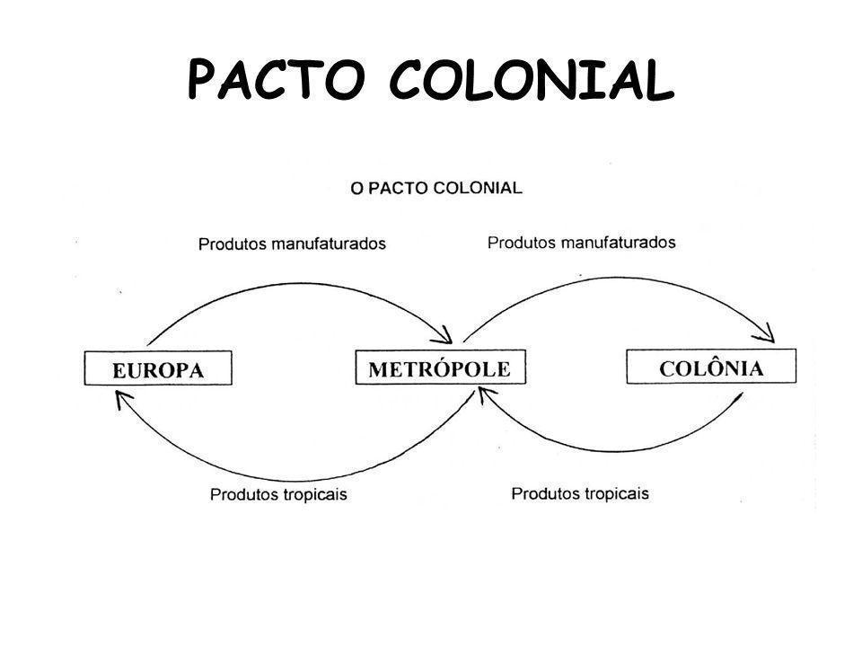
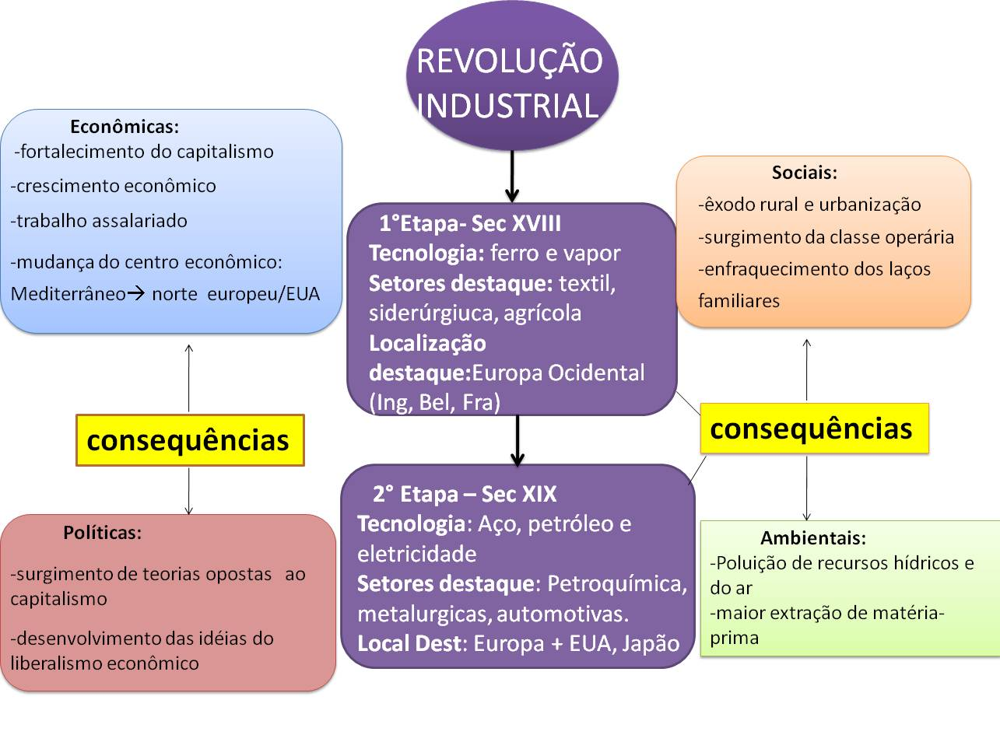
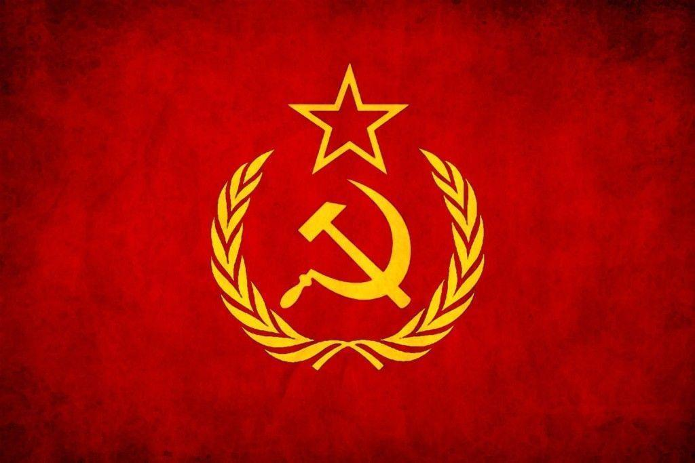

O capitalismo e o socialismo são dois sistemas político-econômicos que organizam as relações nas sociedades. Muito embora sejam tratados como opostos, essa designação não é suficiente para que se possa compreender toda complexidade de ambos. Atualmente é um processo complexo definir um país como socialista, já que a predominância no mundo é de países que seguem a lógica do capitalismo. Embora alguns países como Cuba, China, Coreia do Norte e Vietnã ainda sejam referidos como socialistas, na prática muito pouco daquele sistema ainda é visível. Em Cuba, por exemplo, em questões relativas ao turismo, nota-se uma lógica capitalista de atuação, mas em questões como saúde e educação, o controle do Estado é significativo. Apesar das contradições, estes países continuam sendo definidos como socialistas. Vejamos como se estruturam os dois sistemas:
O capitalismo é um sistema que tem suas bases firmadas na economia de mercado. Portanto, a ideia central deste sistema é a compra e venda, sendo que a troca é uma prática que vem definhando gradativamente ao longo dos anos. Essa economia de mercado permite ao consumidor a escolha dos produtos que ele deseja adquirir, podendo optar entre as marcas e modelos, além de selecionar os preços mais atraentes. Deste modo, o capitalismo incita também à concorrência entre os vendedores. Os sujeitos sociais são também vistos enquanto mercadorias, uma vez que necessitam vender sua força de trabalho, para que possam consumir. Assim, a concorrência se manifesta entre as pessoas também. Karl Marx (considerado o fundador da doutrina comunista) chamou essa transformação dos homens em mercadoria de reificação, que consiste na coisificação das relações sociais.
“Concluímos, portanto, que o mercado é o palco da disputa, ou seja, da liberdade que têm os vendedores (os capitalistas) de disputar o mercado estipulando o preço de suas mercadorias.” (SILVA, 2013, p. 62)
Em um sistema regido pela competitividade, a redução dos custos das mercadorias é uma tentativa por parte dos capitalistas, os quais poderão reduzir os salários pagos aos consumidores, utilizar-se de trabalho informal ou infantil, fornecer precárias condições e jornadas extensivas aos trabalhadores, etc. Estes são alguns dos problemas intrínsecos ao capitalismo. Para conhecer mais sobre as consequências deste sistema, assista ao filme “Tempos Modernos” de Charlie Chaplin, que é um dos clássicos utilizados para compreensão de como o capitalismo rege a vida das pessoas.

O capitalismo é um sistema que visa à autonomia dos empresários em relação ao Estado, com base na ideia de mínima intervenção estatal. As relações neste sistema são baseadas na lei da oferta e procura, ou seja, os preços dos produtos são fixados de acordo com a procura que há deles. Outro conceito essencial para compreensão do capitalismo é o de lucro. O lucro é basicamente o valor agregado sobre o custo da produção de um produto. Quanto menores forem os custos de produção, maiores serão os lucros. Assim, a exploração dos trabalhadores é algo que se tornou comum.

O sistema capitalista tem como base a sociedade de consumo. Como sociedade de consumo é entendida aquela em que as necessidades de consumo influenciam o pensamento social, especialmente pelas mídias, impulsionando a produção e a geração de lucros aos capitalistas. Há uma valorização do valor de troca das coisas em detrimento do valor de uso. Ou seja, há um incentivo muito grande ao trocar de bens, mesmo que estes ainda estejam sendo úteis. Portanto, são lançados diariamente no mercado inúmeros produtos novos, para que os consumidores troquem seus produtos antigos. Estas são as obsolescências criadas pelo sistema, fazendo com que as pessoas joguem fora produtos que estão bons, com a finalidade de comprar outros mais novos. Ou ainda, muitos bens são criados com curtos prazos de validade, devendo ser descartados precocemente. A descartabilidade é uma das marcas do sistema capitalista.
Embora o capitalismo tenha alguns princípios básicos, houve um desenvolvimento deste ao longo dos anos, desde a desintegração do feudalismo. O início do capitalismo ocorre a partir do século XV, embora não seja possível definir uma data precisa. As fases do desenvolvimento do capitalismo são divididas em três fases.
Capitalismo Comercial ou Mercantilismo
Essa fase é marcada pela expansão marítima da Europa, com a conquista de novos territórios, como a América, a Ásia e a África. Com a colonização, estas passaram a fornecer matérias-primas para promoção do desenvolvimento europeu. Em troca da matéria-prima, as colônias recebiam produtos manufaturados. A prática do mercantilismo permaneceu até o século XVIII, na qual o governo absolutista intervia de forma intensa na economia. O objetivo principal do mercantilismo era o acúmulo de riquezas, as quais definiam o poder dos reinos. Além do pacto colonial, outras medidas também foram adotadas, como a prática do metalismo, que era a acumulação de metais, como o ouro e a prata. Assim também a industrialização era incentivada, pois exportar produtos industrializados era vantajoso, mesmo que fosse necessário importar matérias-primas, pois estas eram mais baratas. A imagem abaixo representa o pacto colonial:

Capitalismo Industrial
Esta fase do capitalismo é marcada por uma transformação também no pensamento social, especialmente em relação à noção de tempo e espaço. A inserção de novas técnicas a partir da Revolução Industrial modificou a forma pela qual a produção era efetuada. Houve uma ruptura também quanto ao modo como o Estado intervia na economia, implantando um pensamento inovador de livre iniciativa e individualidade. Substituíram-se antigos equipamentos por outros mais modernos, como no caso das caravelas que foram trocadas por navios mais sofisticados, e dos meios de comunicação rudimentares, substituídos por telégrafos. A Inglaterra é considerada como o “berço” da Revolução Industrial, a qual impulsionou uma revolução também em outros países, como a França, os Estados Unidos, o Japão, a Alemanha e Itália, a qual ficou conhecida como Segunda Revolução Industrial, em meados do século XIX. Este período de destaca pela aceleração das transformações no espaço geográfico. Veja abaixo um esquema explicativo das mudanças que ocorreram neste período do capitalismo:

Capitalismo Financeiro
Nesta terceira fase do capitalismo é tido o auge do imperialismo, o qual é uma política de expansão territorial, que abarca também aspectos econômicos e culturais, de uma nação sobre outras.
O capitalismo financeiro possui algumas características relevantes, as quais são: Monopólio (quando há um domínio de uma empresa em relação a um segmento específico); Oligopólio (quando apenas algumas empresas controlam a maior parte do mercado); Cartel (quando um pequeno grupo de empresas controla a distribuição, produção e o preço de serviços ou produtos); Truste (são empresas de um mesmo grupo que se organizam com a finalidade de deter todo processo produtivo, visando a maior obtenção de lucros); dentre outras.
Existem diversas diferenças entre o capitalismo e o socialismo, sendo o principal deles o modo como é exercido o controle dos meios de produção. No ideário socialista, os meios de produção cumprem uma função social, visando à coletividade.

Assim, como não há a posse privada dos meios de produção, teoricamente não existiriam diferenças entre as classes sociais (burgueses e proletários), e consequentemente haveria uma sociedade igualitária. A origem do pensamento socialista deriva do século XIX, e surge como forma de confronto às ideias do liberalismo e do capitalismo. A ideologia socialista contou com a influência de dois grandes pensadores alemães, os quais foram Karl Marx e Friedrich Engels, e que através de suas ideias, disseminaram o pensamento socialista. Apenas em 1917 houve a implantação prática do socialismo no mundo, quando surge a União das Repúblicas Socialistas Soviéticas (URSS). Posteriormente outros países também aderiram ao socialismo, como a China e Cuba, além de outros.
As principais características do socialismo são: os meios de produção são socializados, ou seja, pertencem a toda sociedade, sendo gerenciados pelo governo; economia controlada pelo governo desde o planejamento até a execução das medidas econômicas; não há concorrência entre as pessoas, consequentemente os preços são estáveis. Além destas, a ausência de patrões (burgueses) faz com que não existam classes sociais, e todas as pessoas trabalham juntas para o fortalecimento e desenvolvimento da sociedade.
Embora seja possível verificar que o socialismo é um sistema mais igualitário, e que visa melhorar a qualidade de vida das pessoas, ainda existe muita resistência em relação a ele. Essa resistência foi criada ao longo dos anos, e impregnada no pensamento social, fazendo com que existam muitos pré-conceitos sobre essa ideologia. O mundo é predominantemente capitalista, e os países que buscam manter o sistema socialista, enfrentam diversas dificuldades de relaciona-se com os outros países.